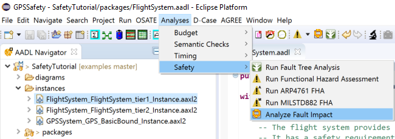
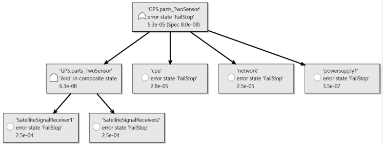

In this write-up, we demonstrate on an example how functional ahazard asessment (FHA), fault impact analysis (FMEA like), and fault tree analysis (FTA) of a safety-critical system can be performed through the use of AADL, Error Model V2 (EMV2), and the analysis capabilities of OSATE.
In fault impact analysis the impact of fault occurrences on a system is determined through forward reasoning from an error source. One such form of inductive impact analysis is known as failure mode and effect analysis (FMEA). In OSATE it is supported by a Fault Impact Analysis capability.
In fault tree analysis fault occurrences are identified as contributors to a critical failure effect, such as an accident through backward reasoning. One such form of deductive fault impact analysis is known as fault tree analysis (FTA). In OSATE the Fault Tree Analysis capability supports the generation of fault contributor traces with identification of dependent events, i.e, , component failures that affect multiple other components, fault trees that are flattened and transformed fault traces with occurrence probability calcluation, and minimal cut sets with occurrence probability calcluation. It supports event and gate types defined in the NRC Fault Tree Handbook (NUREG-0492).
The objective of flattening and transformations is to simplify the fault tree and to move dependent (shared) events up, potentially eliminating its replication in the tree.
We will show how AADL and EMV2 can be used in this process. In terms of notation, we will demonstrate the use of EMV2 at three levels of abstraction:
error propagations and flows: early for FHA, for impact analysis (FMEA) typically single source tracing forward to identify impact; backward propagation to identify all potential contributors to a catastrophic or major event (in FTA result presentation); and events that affects multiple components, thus, represent common causes (part of FTA result presentation). The level of specification detail corresponds to that of the Fault Propagation and Transformation Calculus (FPTA) of York University.
Component error behavior specifications: identification of failure modes, Types of component failures (error events), error behavior logic to reflect redundancy of external input and redundancy of subcomponents. This level can take into account any safety system/fault management design such as reudnant input or parts.
Compositional error behavior (failure modes) in terms of subcomponent error behavior to determine initial system reliability based on a parts model. It can be used to generate a composite parts fault tree.
We will demonstrate the capability on a GPS system. The model example is available on Github as Safety Tutorial. A second model example that illuastrates the use of ARP4761 hazards specifications can be found at ARP4761 Example.
First, we introduce the GPS in the context of its operational setting, a flight system. Given the safety requirements of the flight system we determine a safety requirement on the GPS in terms of likelihood of failure. We do so on a functional architecture of the flight system. This becomes basis for the design process of the GPS. Initially, a system engineer determines the functional architecture and the physical architecture of the GPS. For the physical architecture, the system engineer identifies physical components and assesses whether they are able to achieve the required failure occurrence probability. Design alternatives are considered to see if the target probability can be achieved, or whether the architect of the flight system has to accommodate a lower reliability GPS. The functional architecture determines the data and control flow it becomes the basis for inductive and deductive fault impact analysis. Once allocation decisions have been made, the impact of physical component faults on the services provided are analyzed.
We proceed by first providing a summary of functional hazard assessment, fault impact analysis and fault tree analysis, and then walking through a series of development phases to illustrate the use of these analyses on models with different levels of detail.
Functional hazard assessment allow people to identify hazards in a system by annotating an AADL model of the system with Hazards property values. This can be done on a functional architecture, a physical architecture, the delpoyement of a functional architecture to a physical architecture. It can also be done on a tak and communication architecture deployed on a hardware platform.
We first provide details of the property, show an example of its use, describe how generation of FHA reports is invoked, and show an example of such a report. FHA can be performed in a generic Error Model V2 (EMV2) format, in ARP4761 format, or on MIL STD 882 format.
The Error Model V2 Annex standard introduces several properties to model hazards. Hazards exists in a generic format (EMV2::Hazards), in ARP4761 format (ARP4761::Hazards), and MIL STD 882 format (MILSTD882). The property allows users to associate hazards decriptions with error propagations, error sources and paths, error events, error behavior state, and error types. The value of the property is a list of hazard description records.
Typically you would annotate an AADL model with EMV2 outgoing error propagations and associate hzards property values with them. You may also add error source declarations or error path declarations and attach hzard descriptions with those. You may have represented failure modes through an error behavior state machine. In this case you have identify a failure mode as hazard by attach a hazard description to it. Finally, You may have specified a component error behavior that includes error events and attached a hazard description with those events. In this case, the report includes the hazaed descriptions of all events that are referenced in error behvior transitions.
The generic version of the hazard descrition record has the following fields:
with the following labels:

The ARP4761 version of the record has the following fields:

with the following labels:

The MILSTD882 version of the record has the following fields:

with the following labels:

Below is an example of a hazards property associated with an error source. The example is taken from the GPS system of the safety tutorial.

The second example illustrates the use of the ARP4761 hazards property and is taken from the ARP4761 example model.

The FHA report is generated by selecting an instance model and invoking the command via the main menu, the context menu, or the tool bar. The figure below illustrates the command via the main menu. It is in the same location under the context menu, which you get by right clicking on the instance model. The same icon is used in the tool bar to identify the command.

You will find three variant of the Functional Hazard Assessment command. The generic command looks for EMV2::Hazards property values. The Functional Hazard Assessment (ARP4761) command generates a report for APR4761::Hazards values. Finally, the Functional Hazard Assessment (MILSTD882) command generates a report for MILSTD882::Hazards values.
The FHA report is a cvs file that can be found in the reports folder under the FHA subfolder.

It lists the component by name, the error model element, e.g., error source and error type, and all entries in the hazard description record. A sample of such a report is shown below.

If you have annoated the AADL model with EMV2::Hazards properties and run the Functional Hazard Assessment (ARP4761) command (or MIL std 882 command), you will get an empty report. Currently we do not automatically map hazard descriptions of one format into one of the other two formats.
The fault impact analysis works with AADL models annotated with EMV2 at various levels of detail. At a minimum, users have to specify outgoing and incoming error propagations and error source, error path, or error sink declarations. OSATE will ensure that the incoming propagated error types match up with those that are propagated from other components.
Fault impact analysis starts with each error source and the optional when condition associated with it. The element of the condition become the original fault and the out propagation identified by the error source the first level effect. If the error source has multiple error types, i.e., a type set, the impact trace is generated for each error type.
If the component has a component error behvior specification that includes error events, then the error event is considered an error source if it triggers a transition to an error behavior state that itself results in an out propagation, i.e., is identified in an out propagation condition declaration.
For each component the outgoing propagations follow the connections or bindings to their destination component until an error sink, an outgoing error propagation external to the outermost system, or a cycle in the propagation are detected. For each incoming propagation error paths are used to identify outgoing propagations. If no error paths are specified for an incoming error propagation then all outgoing propagations are assumed to be affected by it.
Fault impact analysis also generates impact traces for incoming error propagations from sources external to the system. In this case, the incoming error propagations of the top-level system are the starting point.
The fault impact analysis does not require any properites to be set.
If no error flow exists for an incoming error propagation then a flow path specification in the core model is interpreted as error path. If neither are present propagation through all outgoing propagation points are assumed.
When the user has added component error behavior, i.e., error events, error states, and transitions, they are interpreted as part of the fault impact analysis, giving the user a higher fidelity result. In this case, error events that trigger transitions and result in outgoing propagations are used as starting points of a fault impact trace.
The fault impact analysis generates a report and is invoked by selecting an instance model and invoking the command via the main menu, the context menu, or the tool bar. The figure below illustrates the command via the main menu. It is in the same location under the context menu, which you get by right clicking on the instance model. The same icon is used in the tool bar to identify the command.

The fault impact report is a cvs file that can be found in the reports folder under the FaultImpact subfolder.

The fault impact report first lists the impact traces for all error sources declared within the system instance, and then impact traces ffor external error sources identified by incoming error propagations of the top-level system.

Each row in the report represets an impact trace.
The next pairs of elements represent the failure mode and next elvel of effect as the impact is traced along error propagation paths as determined by connections, bindings, or user declared proapgation paths in EMV2 subclauses.
When an impact trace termines a label indicates the reason for the end of the trace. The labels are:
Masked: an indication that an error sink has been reached.
Unhandled Type: the outgoing propagated error type is not listed as an error type in the incoming error propagation at the receiving end of the propagation path (connection, binding, or user declared propagation path).
Unhandled Failure Effect: an incoming failure effect that is not handled as sink or by an outgoing error propagation, i.e., the incoming propagated error type is not listed in any error paths or outgoing error propagations.
External Effect: impact to the operational environment of the system, i.e., the impact trace reached an outgoing propagation of the top-level system.
Propagation Cycle: the impact trace reaches an element in the trace that has previously propgated the same error type on the same outgoing propagation point.
No feature with out propagation: an outgoing propagation has an outgoing connection to a feature of the top-level system, where that feature does not have an error propagation declared. The out propgation of the connection source represents the external effect.
No Outgoing Connection: we have an outgoing propagation on a feature that is not connected to another component.
No In Propagation: the destination feature of a connection does not have an incoming propagation declared.
No Binding: the outgoing propagation is for a binding point, but the binding has not been specified yet.
Additional labels may be used for intermediate elements of the impact trace to indicate when an incoming type or type set is propagated as separate subtypes (Subtype), whether flow declarations in the core model are used when error flows are missing (flowpath), or when an incoming propagation is mapped to all outgoing propagations (All out props).
Users can associate EMV2 specifications at several levels of a system architecture. The fault impact analysis interprets the lowest level components with EMV2 subclauses to determine the propagation paths and generate the impact trace.
Fault tree analysis operates with the same AADL model annotated with EMV2. Again users can specify the model at different levels of detail. Users can specify error propagations and error flows. Users may also specify component error behavior, in which case it is interpreted instead of the error flows. Finally, users can declare composite error behavior, where an error behavior state of a system is declared in terms of error behavior states of its subsystem.
Fault tree analysis is invoked on an instance model through the main menu, context, menu, or tool bar. By default the top level component instance becomes the root of the fault tree analysis. The main menu is shown below.

Note that users select a component instance other than the root component instance (system instance) as starting point of fault tree analysis.
Fault tree analysis uses an error state or outgoing error propagation of the selected component instance as starting point. The analysis produces fault trees reflecting error states by interpreting composite error state declarations, or fault trees by tracing the flow of propagated errors backwards by interpreting propagation paths between components based on connections and bindings as well as error flows or component error behavior within components. These fault trees are shown to the user in graphical or table views. The figure below shows the dialog box through which the user can select an error state or outgoing propagation as well as an example fault tree in graphical view.

Users can choose one of three variants of error flow-based fault trees or error state based fault trees:
Fault tree with computed occurrence probability: A fault tree based on backward trace of the propagation graph with contributors shown as fault tree events. The fault tree is compacted to remove intermediate steps of the trace to focus on actual contributors, such as error events, error sources, or external effects propagated into the system of interest. Occurrence probability is calculated from occurrence propability values of the leaf events in the fault tree. Replication of dependent (common) events is minimized through fault tree transformation.
Minimal cut sets with computed occurrence probability: Minimal cut sets of contributors are generated from the propagation graph and occurrence probability is calculated from assigned occurrence propability values of the leaf events in the fault tree.
Fault Contributor Trace: A fault tree is generated that shows the full backward trace to contributors. This cncludes intermediate steps such as outgoing and incoming error proagations, and error states. Dependent (common) fault tree events and event subtrees are identified by a “*” in the graphical view and by a column in the table view.
Parts fault tree with compouted occurrence probability: A composite fault tree of system parts recursively identified by composite error state declarations. In this case the propagation graph representing error flow is not taken into account. Occurrence probability is computed from the occurrence probability values assigned to error states of the leaf components.
On startup of OSATE fault tree with computed occurrence probability and table view are selected. Users can explicitly select the graphical view instead. If users change these two selections they are remembered for the next fault tree analysis invocation. .
The stored fault trees are stored in an XMI format based on a FaultTree.ecore specification (for details see https://github.com/osate/ErrorModelV2/tree/develop/org.osate.aadl2.errormodel.faulttree/model). They are kept in the FTA folder under the reports folder and their faile names reflect the instance model root as well as the typew of fault tree being generated.

We support the following fault tree elements:
Events: Basic  , External
, External  , Undeveloped
, Undeveloped  , and Intermediate
, and Intermediate  .
.
Basic events represent error sources or error events within the system, External events represent Events that come from outside the system of interest, and Undeveloped events represent incoming propagations of binding points without bindings or incoming propagations of features that are not connected.
Intermediate events represent events whose subevents are combined by logic gates. An intermediate event with a single subevent the intermediate event symbol is shown. For multiple subevents one of the following gate symbols is shown: OR  , AND
, AND  , XOR
, XOR  , PriorityAnd
, PriorityAnd  , KOrMore
, KOrMore  , KOf, KOrLess.
, KOf, KOrLess.
Note that Kof(1) is the same as Xor of single elements, and KOrMore(1) is the same as Or of single elements.
Eclipse Sirius is automatically invoked to visualize the fault trees in table or graphical view.
An example graphical view of a fault tree (shown below) illustrates the different event types. The graphical view uses a compact presentation of events and gates by showing events as rectangles and the gate type as part of an event with multiple subevents.
Each fault tree event rectangle contains an icon reflecting the event type or gate logic type as well as three lines of text:
The first line shows the name of the component instance and incoming or outgoing feature or binding point.
The second line identifies the error model element represented by the fault tree event. Typically this is the error type of an error propagation, an error event, or error state, and in the case of an intermediate event that represents a logic condition, the gate logic and construct containing the logic condition.
The third line shows the computed or specified occurrence probability. In case of a computed probability the specified probability value is shown in parentheses if present.

The example graphical view shows the following:
The top level fault tree event shows the outgoing features and propagated error type representing the outgoing error propagation selected by the user in the dialog.
The basic events for components GPS, FlightControl, and AutoFlightGuidance show an error type from an error source as effect through an outgoing features.
For powersupply the basic event shows an error event as the source due to the fact that its specificaiton has an error behavior specification with a transition triggered by an error event.
Finally, two external events for component flightsystem_tier1 shows incoming effects (error types) from outside the flight system via the satellite signal and pilot input .
An example table view is shown below for a different fault tree, that of the GPS with two sensors. The example shows a top level event with three basic subevents and one intermediate event as and gate with two subevents representing the redundant sensors.
The first column shows the fault tree events hierarchically nested. The icon and the text in this column is the same as the first line of the graphical fault tree representation.
The second column shows error model element represented by the event (line 2 of the event in the graphical view).
The third column shows the computed occurrence probability.
The fifth column indicates the event type, or in the case of an intermediate event with more than one subevent the gate logic.
The sixth column indicates whether the fault tree event is a dependent event, i.e., common (shared) subevent to multiple events.

One use early in the process is a composite parts fault tree generation. In this case users define a parts model, i.e., identify the parts of each system, and specify how the error states of the parts relate to the error states of the enclosing system through composite state declarations. Note that user can define such a model with error state machines at multiple level of a system architecture. Users also do not have to specify an error state machine for each level. Instead a higher level state can be expressed in terms of subsystems more than one level down by identifying a subcomponent inside a subcomponent as the condition element. If the identified subcomponent also has composite error behavior specifications, then the generated fault tre recursively includes the identified composite error states.
An example of a composite error behavior state declaration is shown here.
In EMV2 the 1 ormore operator is used to indicate inclusive oOr, while the EMV2 Or operator represents exclusive or.

In our example, the package GPSSystem contains the top level GPS system with a number of implementations with different levels of detail and configurations. The parts model is represented by the system implementation gps.parts_TwoSensor. The composite error behavior specifies that the state FailStop for GPS holds if both of the replicated satellite signal receivers fail (AND), or any of the other parts fail.
This is similar to specifying reliability block diagrams (RBD) in a compositional manner, where the logic of the composite error behavior state corresponds to the logic represented graphically by parallel (AND) and sequenced (OR) blocks. The parts fault tree replaces the RBD command from earlier versions of OSATE.
Users can also achieve the effect of RBD by modeling components with error flows and connections. In the case of components with multiple incoming error propagations represewnting replication users declare an out propgation condition declaration that specifies which incoming error propagations represent input from replicated component with AND logic (see Flow-based Fault Tree Generation below).
Occurrence probability of the system error state (failure mode) is computed from the occurrence probability values assigned to the error states of the leaf nodes. The figure below shows the assignment of the occurrence probability value to the power supply.


Occurrence probability is computed from the occurrence probability on error states of the parts. This allows you to use of an error state machine with states only, i.e., without specification of error events and transitions. If an error state machine has been included with error events and transitions, and you want the error event included in the generated fault tree, then use the propagation graph based fault tree generation.
The resulting graphical fault tree looks like this.

A flow-based backward trace traverses propagation paths along connections, bindings, and error flows from incoming propagations to outgoing propagations are interpreted. If component error behavior specifies error behavior state machines with error events, states, transitions, and outgoing propagation conditions, then they are interpreted resulting in a higher fidelity fault tree.
The starting point of a flow-based fault tree generation is an outgoing error propagation and error type of interest for the system instance, to which the fault tree analysis command is applied. This outgoing propagation represents the external effect a system function or service can have on its operational environment. The backward trace proceeds along propagation paths and error flows/component error bheaviors until it encounters an error source (Basic event), an error event (Basic event), or an incoming error propagation that does not have a propagation path due to an absent connection or binding (Undeveloped event), or an incoming error propagation of the top-level system (External event).
In the case of a fault contributor trace every stop of the backward trace is reflected in generated structure. The same component and error model element may be reached multiple times, i.e., it represents a dependent event. In this case, each copy of the shared event (or event subtree) is tagged accordingly.
An example fault contributor trace is shown for the system GPS.basic. The example shows a trace to the error source of the network component and to the error event of the powersupply1 component. Both are marked as dependent events as they are reached via both SatelliteSignalReceiver1 and SatelliteSignalReceiver2. The trace also shows an exernal event in the form of a satellitesignal coming into the GPS system. Finally, the trace shows an undeveloped event in the form of a processor binding point for processing. It is shown as undeveloped because we do not have a binding specified from processing to cpu.
Note that dependent events represent common cause as their failure affe ts multiple components.

When the user selects Fault tree with computed occurrence probability the fault contributor trace is flattened by removing intermediate events with a single subevent. In addition a set of transformations are applied to reduce the presence of dependent events by moving events and event subtrees up until they are no longer shared.
The generated fault tree for our GPS.basic example is shown below. The powersupply1 and network components contribute an error event and error source respectively, which were shown in the trace as dependent events. Those events have been moved up to become subevents under the top-level system event connected via an OR gate.
Note that in a flow-based fault tree the occurrence probability of an outgoing error propagation consists of the occurrence probability of all error events within the the root system parts as well as any incoming error propagation.

When the user selects Minimal Cutsets with computed occurrence probability the analysis generates a set of minimal cutsets for the system. The collection of cutsets is represented as an OR, while the elements in each cutset are added together. In our example each cutset has only a single element.

The fault tree generator maps EMV2 constructs into fault tree Events and Gates as follows:
EMV2 conditions have AND, OR, ORMORE, ALL as logical operators
EMV2 AND maps to FTA AND
EMV2 OR maps to FTA XOR (exclusive OR)
EMV2 1 ORMORE maps into FTA OR (inclusive OR)
EMV2 X ORMORE maps into a FTA KOrMore
EMV2 ALL maps into FTA AND
In the case of state-based fault tree generation, the condition logic of composite error state declarations are reflected according to the above mapping. For each subcomponent state its composite state declaration is interpreted if present.
In the case of flow-based FTA, an outgoing error propagation or error state and the selected system instance or subcomponent instance is the starting point.
For an outgoing error propagation we follow OutgoingPropagationConditions (OPC) backwards with multiple OPCs combined as OR. If OPCs are absent we follow the propagation path from the outgoing error propagation of the outer component to the outgoing error propagation of a subcomponent instance.
Note that if the root system instance is selected we typically expect to find a propagation path to a subcomponent instance. Otherwise, the user may select a subcomponent instance with an error model as starting point and apply the fault tree analysis command to it.
If OPCs and propagation paths are absent, we follow error flow declarations. When following error flows to incoming error propagations, we combine error paths and error sources as OR.
For OPC, the condition expression and the error state are interpreted and combined as a PRIORITY_AND with the state related event occurring before the trigger condition). If the outgoing propagation condition applies to all states (all keyword on left) only the condition is interpreted.
The OPC condition, if not empty, identifies incoming error propagations. They are followed to outgoing propagations of connected/bound components by following propagation paths. Multiple paths are combined as an OR.
From the error state of the OPC we trace backwards via transitions to identify the error events or error propagations (incoming from the enclosing component or outgoing from a subcomponent) that trigger transition to the state by interpreting the transition condition. The source state of such a transition is recursively traced backwrds until we reach a state without transitions triggered by error events (an operational error state). Multiple transitions with the same target error state are combined by an OR while recursive transitions across states are reflected by a PRIORITYAND.
Error events and error sources are BASIC events. Incoming propagation that represent bindings, but are not bound, are represented by UNDEVELOPED events. Similarly, incoming propagations that do not have a propagation path to a sending component are UNDEVELOPED events.
If an error state is selected to flow-based fault tree analysis on the root system instance then a composite error state declaration is examined to identify one or more subcomponent instances to start the flow-based backward tracing. Alternatively, the user can select a subcomponet instance and error state to start the backward trace from the error state according to transitions into the state.
Note that as we trace backwards, we start with the error type identified by the user and perform the appropriate filtering and mappings according to the specified type set constraints. Incoming propagations that trace back to an incoming propagation of the top system, are represented by EXTERNAL events.
When generating a fault tree, parts fault tree, or minimal cutset, we flatten nested OR, XOR, AND, PRIORITYAND in the generated EMFTA tree (Idempotent Law). For example, if an OR gate has events that themselves contain OR gates, we move their events into the upper OR. The effect is that although the backwards trace traverses multiple components, if all are based on an OR, the events contributed by each component are placed under a single OR gate instead of a right recursively nested OR structure.
When creating the fault tree or parts fault tree, we identify dependent events, e.g., events that represent shared hardware components that multiple functional or software components are bound to, or a power supply that is physically connected to (supplies) multiple sensors. A single instance of this event is maintained in the fault tree structure with multiple gates pointing to this instance instead of replicating it. A reference count greater than one on the shared event indicates that it is referenced by more than one gate. This effectively represents a directed graph. This allows for simple identification of common cause events.
We apply transformations to move the shared event up towards the root. In particular we apply the Law of Absorption to remove subgates with dependent events if they also exist as directly under the enclosing gate. We also apply the Distributive Law to move dependent events found in multiple subgates to the enclosing gate.